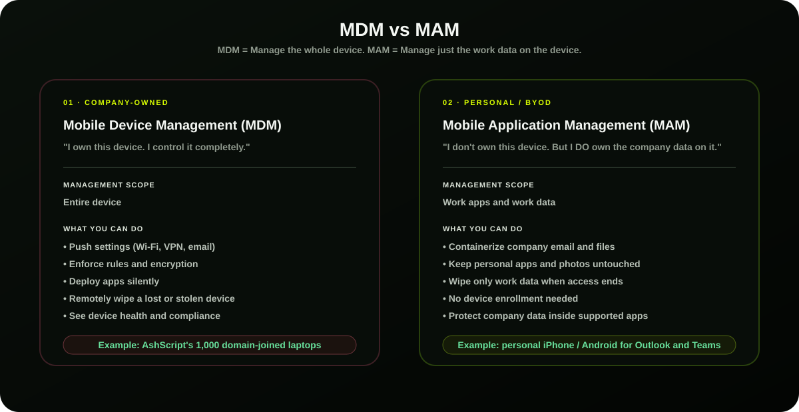
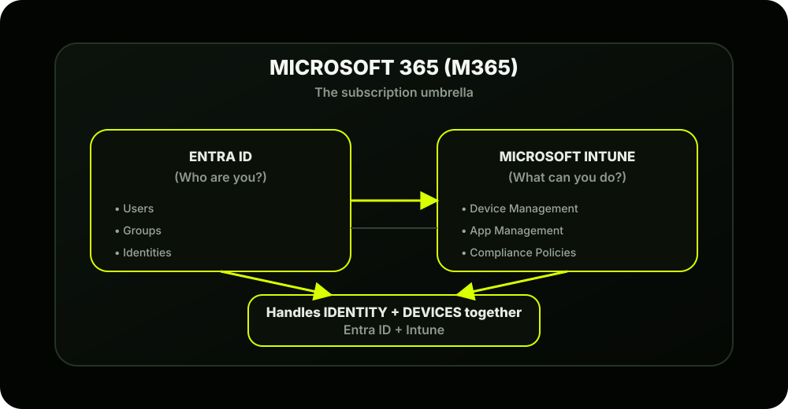

The Scene
It's a Monday morning at AshScript. Ashpak, a senior IT engineer, is staring at his screen juggling three problems simultaneously:
- A laptop was stolen from a travelling employee; the hard drive has sensitive client code on it, and there's no way to remotely wipe it
- A new employee starts tomorrow; it'll take the IT team half a day to manually configure their laptop
- An employee is asking if they can use their personal iPhone to check work email; IT has no answer
Ashpak types two words into Google: "Microsoft Intune"
So: What IS Microsoft Intune?
Think of Intune as your remote control for every device in your company; whether that device is sitting in your office, at someone's home, on a plane, or anywhere in the world.
More formally, Intune is a cloud-based service from Microsoft that does two big things:

1. Mobile Device Management (MDM)
This is for company-owned devices. When a device is enrolled in MDM:
- You can push settings to it (Wi-Fi passwords, VPN, email config)
- You can enforce rules (screen must lock after 5 minutes, encryption must be on)
- You can deploy apps silently, without the user doing anything
- You can remotely wipe it if it's lost or stolen
- You can see its status; is it healthy? Is it compliant?
AshScript example: Those 1,000 domain-joined laptops? Once enrolled in MDM, Ashpak can wipe the stolen laptop from the Intune portal in seconds, from anywhere.
2. Mobile Application Management (MAM)
This is for personal (BYOD) devices. The employee keeps full control of their phone; Intune only manages the work apps and data, not the entire device.
- Company email and files are containerized; isolated from personal apps
- If the employee leaves the company, only the work data is wiped; personal photos stay untouched
- No enrollment needed; the employee never gives IT control of their personal device
AshScript example: That employee who wants to check work email on their iPhone? MAM lets them do it safely. Intune wraps the Outlook app in a protective bubble; company data can't be copied to personal apps.
The One-Line Summary
Where Does Intune Live?
Intune is not a box you install. It's a cloud service; part of Microsoft's cloud family. Here's how it connects:

You can't use Intune without Entra ID; every device and user in Intune is ultimately an identity in Entra ID. They work as a pair, and we'll explore this deeply in Phase 2.
Your First Portal Visit
Here's where to go right now to see the Intune admin center; even before AshScript has set anything up, you can explore the interface:
Navigate to: https://intune.microsoft.com
If you don't have a tenant yet, you can sign up for a free 30-day Microsoft Intune trial at microsoft.com/intune ; this gives you a sandbox to follow along every step of the way.
What you'll see on the Home dashboard:
- Devices; your enrolled device inventory
- Apps; everything you're deploying
- Endpoint Security; compliance and protection
- Reports; health and status of your environment
- Tenant Administration; your settings and configuration